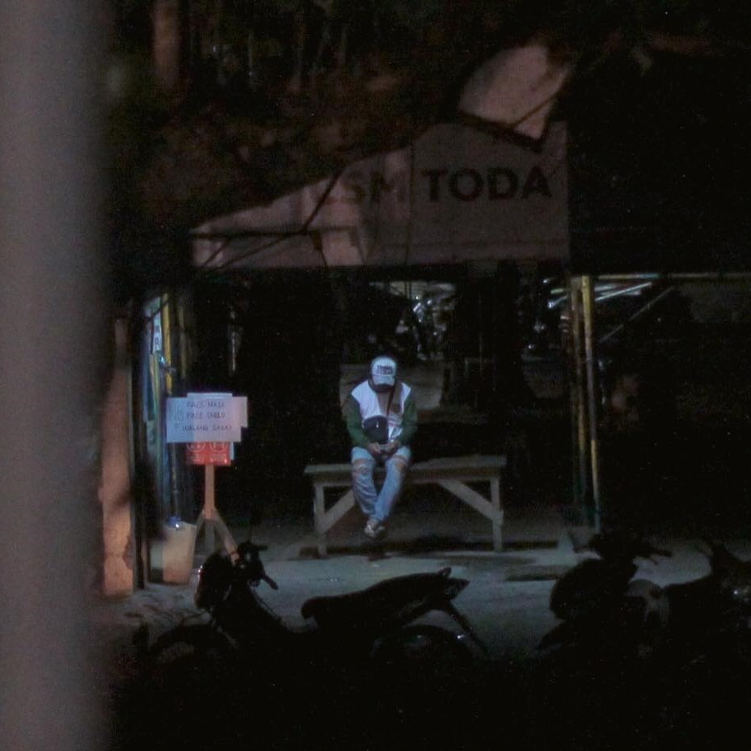
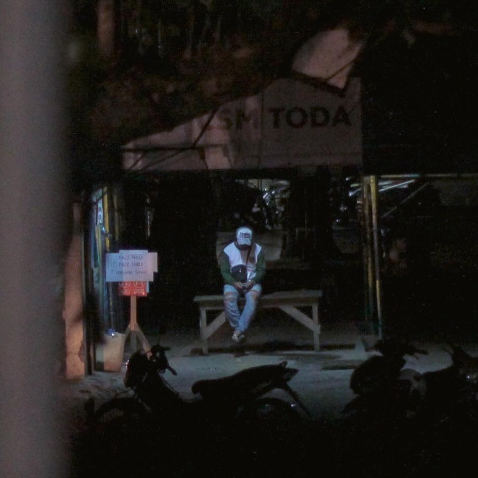
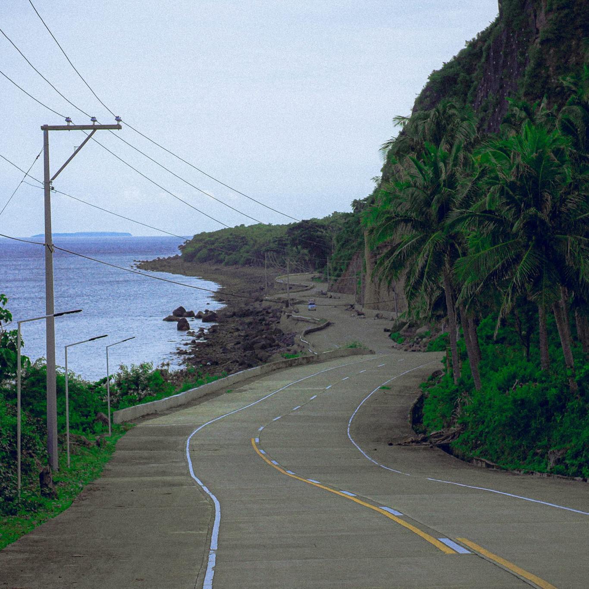
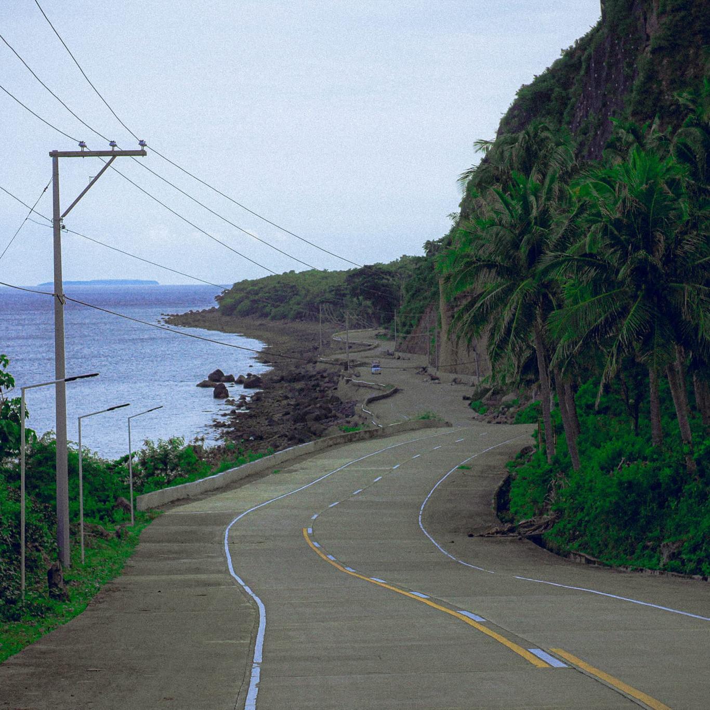

About Me
I am Alyson Salud, an eighteen years old girl who lives in Bacoor, Cavite. My birthday is on November 20, 2004. My nickname is 'Aly' or 'Alyson'. I am a Grade 12 ICT student at St. Dominic College of Asia. A consistent honor student since elementary. I’m an aspiring Multimedia Artist and have been wanting to be part of a production of films.
Hobbies
Fave Artists
Fun Facts
The following are what I usually love to do:
- Video Games
- Badminton, Volleyball & Biking
- Piano & Guitar
- SitCom, K-drama, Movies, Music & Motivational Books
- Photo & Video Editing
- Photography & Videography
The following are my all time favorite bands:
Here are some interesting facts about me:
- I had to wear glasses before due to poor eyesight, but now my vision is 20/20.
- I usually eat Tinola combined with sunny side up egg (It tastes good tho).
- I'm a camera enthusiast.
- I can drive.
- My favorite color is pastel green or any shade of green.
- My MBTI is INFP but can also be INTP (IDK why).
- I'm a fast learner.
- I don’t like the other kinds of vegetables like eggplant, beans, ampalaya, pumpkin, etc.
My House
The picture shown above is where I live. For this part,
I will tour you in our house. Below is the floor plan, you
can click on each room you want to see!
(Note: Some of the rooms aren't available due to privacy.)

My Takeaways
These are the things that I learned from my Computer Programming subject. It wasn't easy, but believe me it was all worth it.
HTML
I have learned that Hypertext Markup Language is the foundation of a website. If we base it on real life, the HTML is the skeleton of a human, which is the structural layer. If there’s no skeleton inside the human’s body, it can’t move or it has no life at all. So without HTML, there are no websites at all. I have learned a lot of things here in HTML, such as creating forms, hyperlinks, tables backgrounds, etc.
CSS
CSS is the acronym for Cascading Style Sheets. If in real life, there’s a skeleton then of course it needs a skin and clothes, which is the presentation layer and its appearance. An HTML without a CSS, would be less appealing to the eye. So the CSS primarily handles and styles the look and feel of a website. In here, I have learned the margin, border, padding, fonts properties and a lot more.
JavaScript
The most difficult part for me. If the human body is already complete, what more does it need? Well, it needs movements and actions. Javascript is the behavioral layer of the website. It makes the website more interactive and user friendly that helps the visitors to navigate and to guide them through additional information. So I learned the variables, loops, data types, strings, and functions, etc.


 


 
